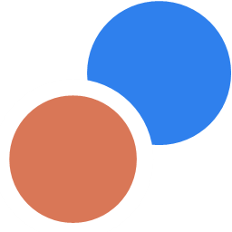
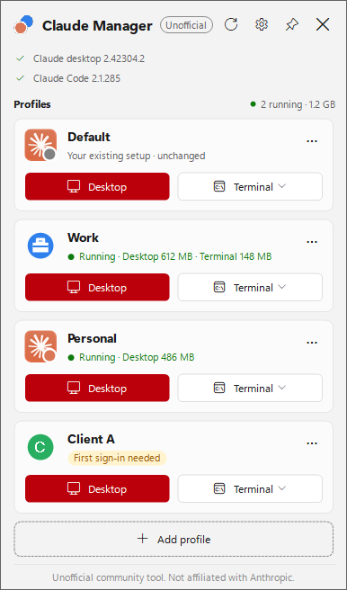
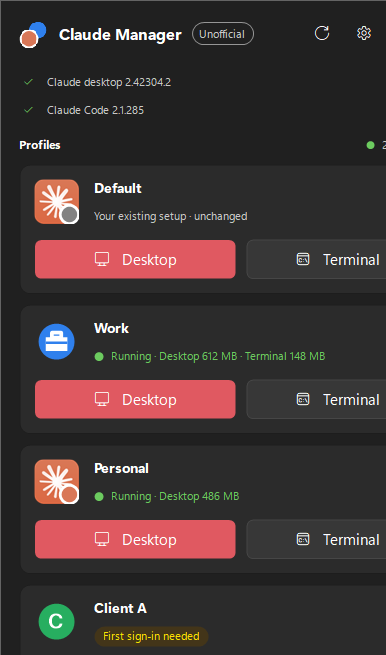
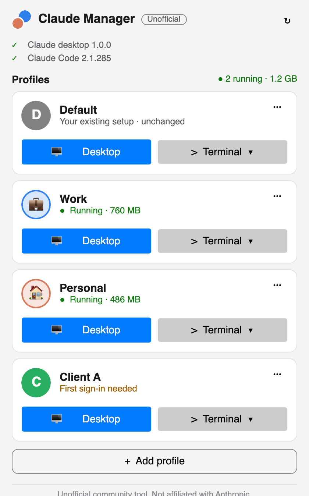

Claude Manager is a free, open-source account switcher for Claude. Use Work and Personal accounts side by side in the Claude desktop app and Claude Code, without logging out and back in.
Windows 10/11 · macOS 12+ · MIT · unofficialWindows: installer, no admin rights needed. macOS: DMG for Apple Silicon and Intel.



Each profile opens its own Claude desktop window with its own login, chats and settings.
The Terminal button starts Claude Code with that profile's CLAUDE_CONFIG_DIR, in that window only.
On Windows, claude:// sign-in links go to the profile you're setting up, not the wrong window.
~/.claude, ~/.claude.json and Claude's app data are never written. Your current account becomes the Default profile.
No telemetry, no accounts. It never reads or sends your logins, tokens or chats.
MIT licensed. Self-tests for every safety rule run on each release.
/login once.Give each account its own profile. Every profile stays signed in, so switching is just clicking Desktop on another profile, and both windows can stay open.
Yes. Each profile's Terminal button starts Claude Code with its own CLAUDE_CONFIG_DIR. Claude Code 2.1.140 or newer is required.
On Windows, yes: sign-in links are routed to the profile being set up. On macOS, quit other Claude windows during a profile's first sign-in.
No. It only chooses which folder each Claude window uses. Logins, tokens and chats are never read, copied or sent, and Claude itself isn't modified.
No. It's an unofficial community utility, not endorsed by Anthropic.
Unofficial community tool. Claude Manager is not affiliated with, endorsed by, sponsored by, or supported by Anthropic. "Claude" is a trademark of Anthropic, PBC, used here only to describe the app this tool works with. It's meant for one person's own accounts and doesn't bypass usage limits.